Трансплантация роговицы может потребоваться людям с травмами или заболеваниями роговицы, тяжелыми рубцами на роговице или помутнением роговицы, которое ограничивает зрение. Иногда пересадка роговицы может потребоваться из-за осложнений операции LASIK, таких как эктазия , инфекция , расплавление лоскута или сильный неправильный астигматизм.
При операции по пересадке роговицы офтальмохирург удаляет часть роговицы пациента-реципиента и накладывает швы на донорскую ткань (трансплантат). Заживление и восстановление зрения может занять до года или дольше, в течение этого времени для предотвращения отторжения назначаются капли steriod для местного применения.
Изображения любезно предоставлены Доктор Эдвард Бошник .
Как мы уже сообщали в других разделах этого веб-сайта, Закрылки LASIK а глубокие разрезы никогда не заживают и остаются открыт на всю оставшуюся жизнь пациента. Такая ситуация подвергает пациентов с LASIK и RK пожизненному повышенному риску повреждения роговицы. инфекция . Пациенты с LASIK и RK, у которых развиваются неизлечимые инфекция может потребоваться пересадка роговицы, иногда даже через много лет после операции.
На двух изображениях ниже представлены фотографии пересаженной роговицы через две недели после операции на глазу, который ранее был Хирургия РК В глаз был закапан зеленый краситель, который выделяет поврежденные ткани при синем освещении.
На фотографии ниже показана роговица пациента, у которого была РК (радиальная кератотомия) операцию в 1988 году. Восемнадцать лет спустя у нее развился инфекция и воспаление. По всей вероятности, патогенный микроорганизм проник в роговицу через специальный разрез. Инфекция не поддавалась лечению глазными каплями с антибиотиками, поэтому пациент был госпитализирован и прошел 7-дневный курс внутривенного введения антибиотиков. К сожалению, повреждение роговицы привело к необходимости пересадки роговицы. Из-за больших открытых разрезов, рубцовой ткани в результате инфекции и крайне неровной поверхности роговицы хирург был вынужден расположить донорскую роговицу не по центру. Вертикально расположенные швы, расположенные в 9:00 и 7:00, были наложены для предотвращения разрыва открытых разрезов РК.
На втором снимке изображен тот же глаз двумя годами ранее, после пересадки роговицы, со швами, удерживающими децентрализованную донорскую ткань на месте.
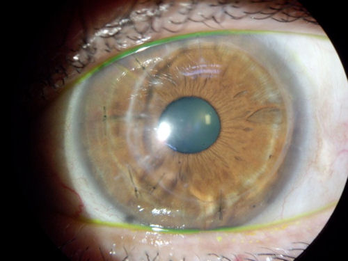
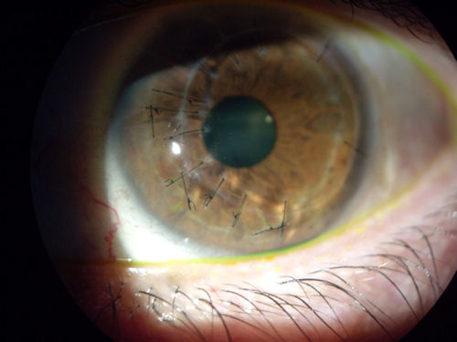
На фотографии ниже представлен отторгнутый трансплантат роговицы. Пациентке уже четыре раза пересаживали роговицу.
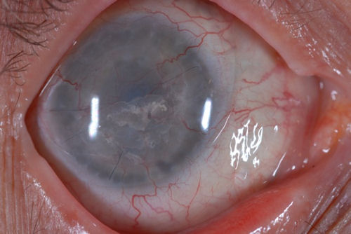
Ниже, в тот же глаз, что и выше, после закапывания зеленого красителя.
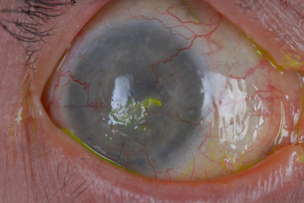
На изображении ниже изображен глаз пациента, которому была проведена неудачная пересадка роговицы. рк Обратите внимание на рк разрезы в верхнем поле зрения. Через три года после операции по трансплантации все еще остаются швы от положения "9 часов" до положения "12 часов". Донорскую роговицу пришлось накладывать не по центру из-за длинной и глубокой рк разрезы.
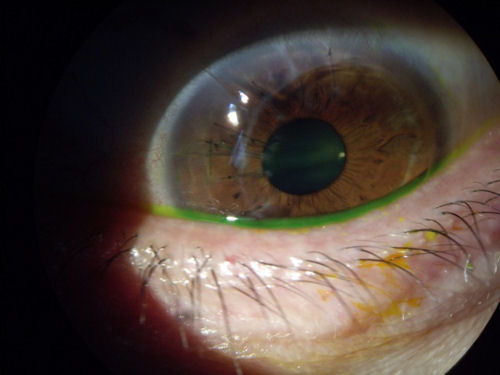
Роговица донора на фотографии ниже мутнеет и разрушается - другими словами, отторгается - через несколько лет после операции. У этого пациента не было рефракционной операции.
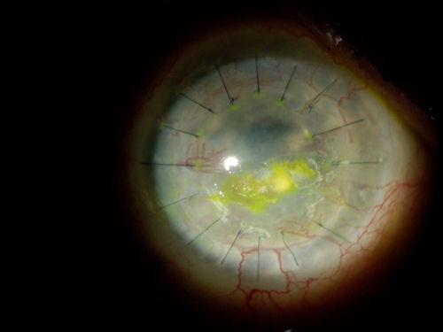
Обратите внимание на швы, наложенные после трансплантации роговицы через неделю после операции, на фотографии ниже. Поскольку ткани заживают в течение недель и месяцев после операции, некоторые швы могут "натягиваться", а другие могут оказывать "расслабляющее действие" на контур роговицы. По этой причине (среди прочего) роговица, как правило, при заживлении имеет очень неровную поверхность. Большинству пациентов с трансплантацией роговицы для улучшения зрения требуются специальные контактные линзы.
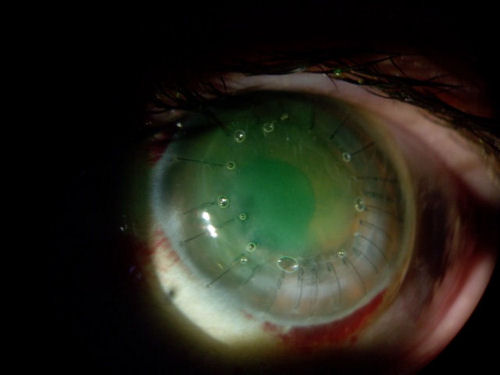
Следующие четыре снимка - это последовательные фотографии одного и того же глаза. К сожалению, донорская роговица этого пациента была отторгнута. Примерно через месяц была проведена еще одна трансплантация. Вскоре после второй трансплантации у пациента развилась глазная инфекция (эндофтальмит). В связи с тем, что в результате инфекции в глазу образовался мусор, была выполнена витрэктомия (стекловидное тело было удалено и заменено инертным раствором). Однако инфекция и ее последствия привели к отслоению сетчатки. Внутриглазное давление пациента также резко упало, что привело к "засасыванию" ткани радужной оболочки в зрачок. В настоящее время пациент слеп на этом глазу, не воспринимает свет и не имеет возможности восстановить нормальное зрение. Это заболевание называется бульбарным туберкулезом и часто приводит к энуклеации глаза. Нажмите на фотографии, чтобы увеличить.
Мы опубликовали случае этого пациента, чтобы подчеркнуть, что пересадка роговицы-это не риск бесплатную процедуру. Хотя то, что вы видите здесь крайне редко, всегда есть непредвиденные, которые могут возникнуть при выполнении любого типа инвазивного операция на глаза проводится.
Обновление за июль 2009 г.: У этого пациента развилась тяжелая глазная инфекция и воспаление, и, вероятно, ему придется удалить глаз из-за рецидивирующих инфекций и постоянной боли. Эти фотографии публикуются, чтобы предупредить пациентов о том, что могут возникнуть неожиданные осложнения с катастрофическими последствиями. Когда дело доходит до зрения, ничего не следует принимать на веру.
На фотографии ниже представлен еще один отторгнутый трансплантат роговицы.
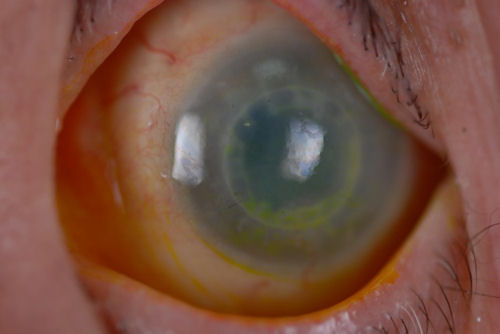
Неудачный результат LASIK может привести к необходимости пересадки роговицы, однако после операции по пересадке зрение все еще может быть плохим, что потребует использования жестких контактных линз. На фотографии ниже показана контактная линза поверх трансплантата роговицы. Вы можете отчетливо видеть кольцо вокруг края донорской ткани, где образовался рубец, соединяющий трансплантат с роговицей.
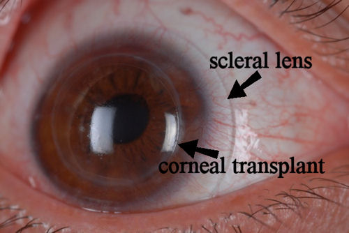
На рисунке ниже представлен снимок роговичного трансплантата в поперечном сечении. Пациент носит жесткие склеральные контактные линзы. 10 лет назад пациенту была проведена трансплантация роговицы, в результате которой у него ухудшилось зрение, и он не смог носить корректирующие линзы любого типа. При использовании склеральной линзы зрение пациента составляет 20/30, и он чувствует себя комфортно. Желтые стрелки указывают на место соединения донорской ткани с роговицей пациента. Нажмите на изображение, чтобы увеличить изображение.
На двух изображениях ниже представлена топография роговицы глаз, подвергшихся пересадка роговицы . Широкий спектр цветов отражает значительные изменения в крутизне и преломляющей способности роговицы по всему центральному диаметру. Красный цвет отражает наиболее крутые участки роговицы. Темно-синий - наиболее плоские участки. На этих снимках видна роговица с очень неровной поверхностью, с выступами и впадинами, которая не является гладкой или сферической. Неровность поверхности роговицы приводит к искажению изображения на сетчатке. Сравните топографию роговичных трансплантатов с топографией дна нормального глаза.
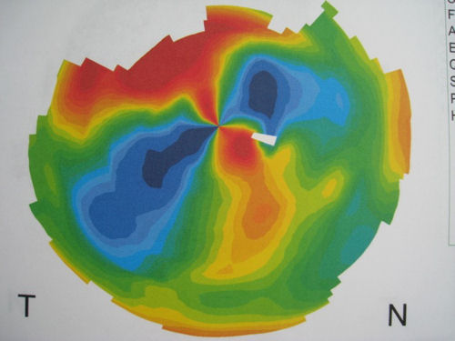
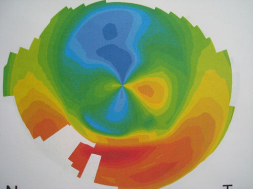
На изображении ниже показан нормальный неоперированный глаз с желательным рельефом роговицы. У этого пациента нормальное зрение.
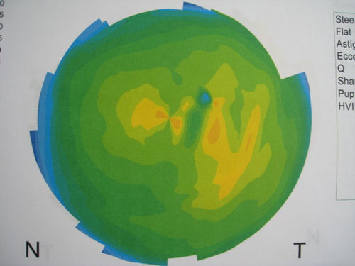
Отказ от ответственности: Данная информация не предназначена для использования в качестве медицинской консультации. Информация, содержащаяся на этом веб-сайте, представлена с целью предупреждения людей об осложнениях LASIK перед операцией. Лицам, испытывающим проблемы со зрением или другие проблемы с глазами, следует обратиться за консультацией к врачу.
/corneal-transplant-2-wks-postop(900).jpg){kind=link}
/corneal-transplant-2-wks-postop-2(900).jpg){kind=link}